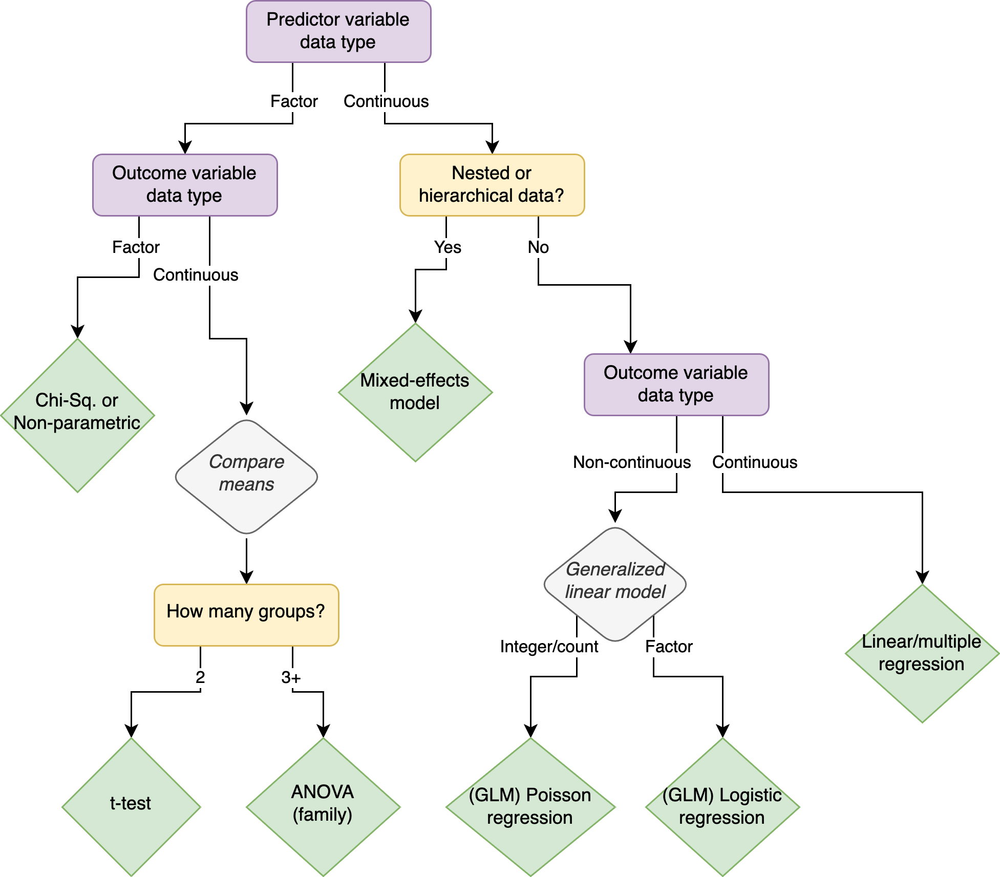
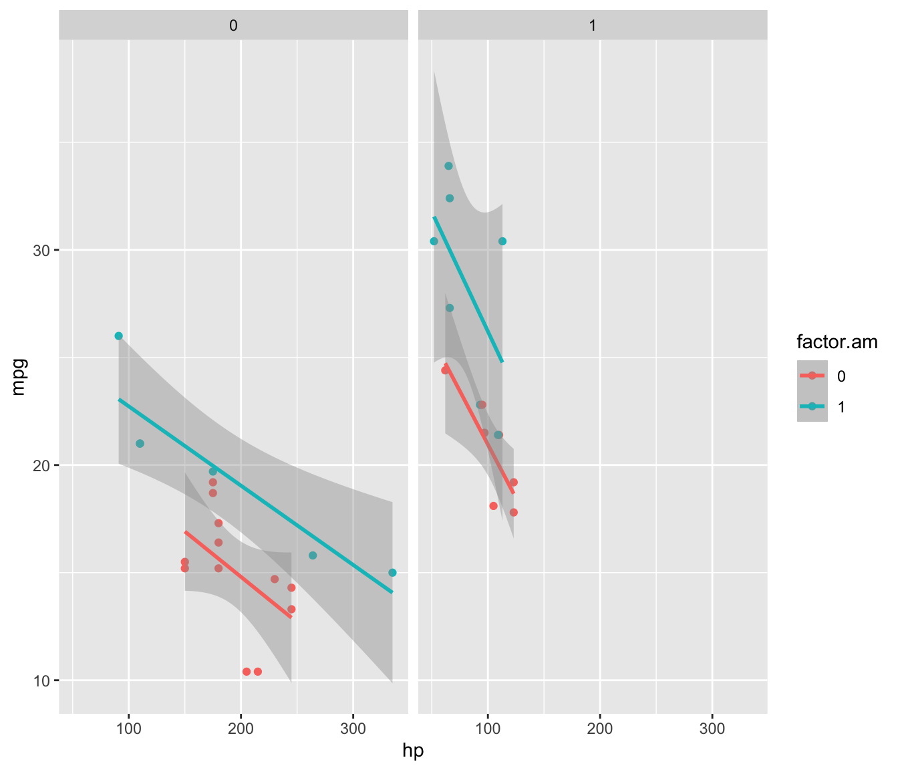
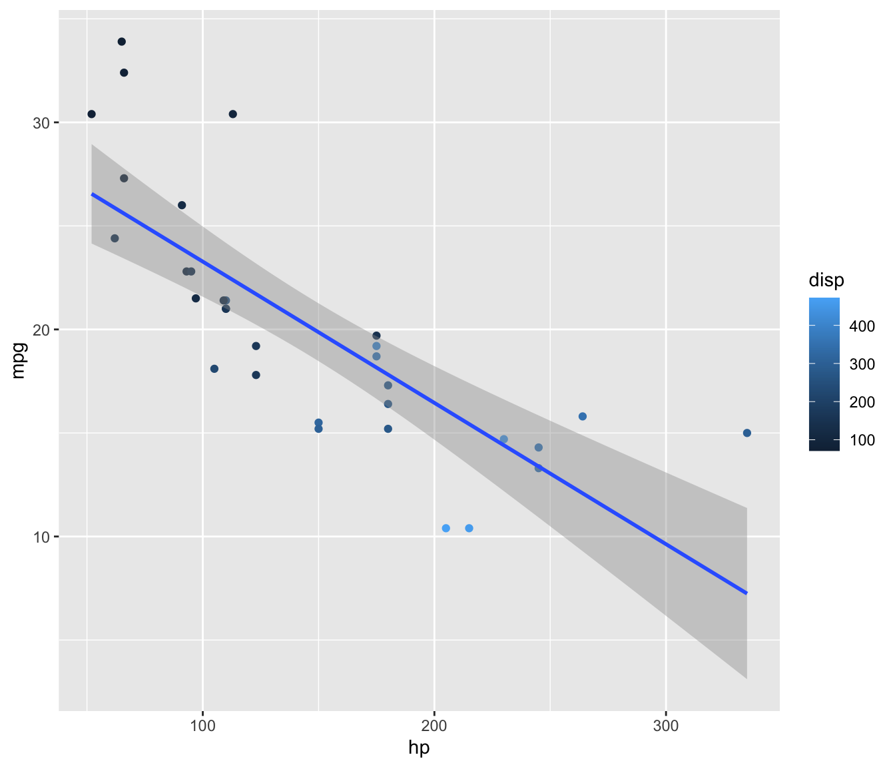
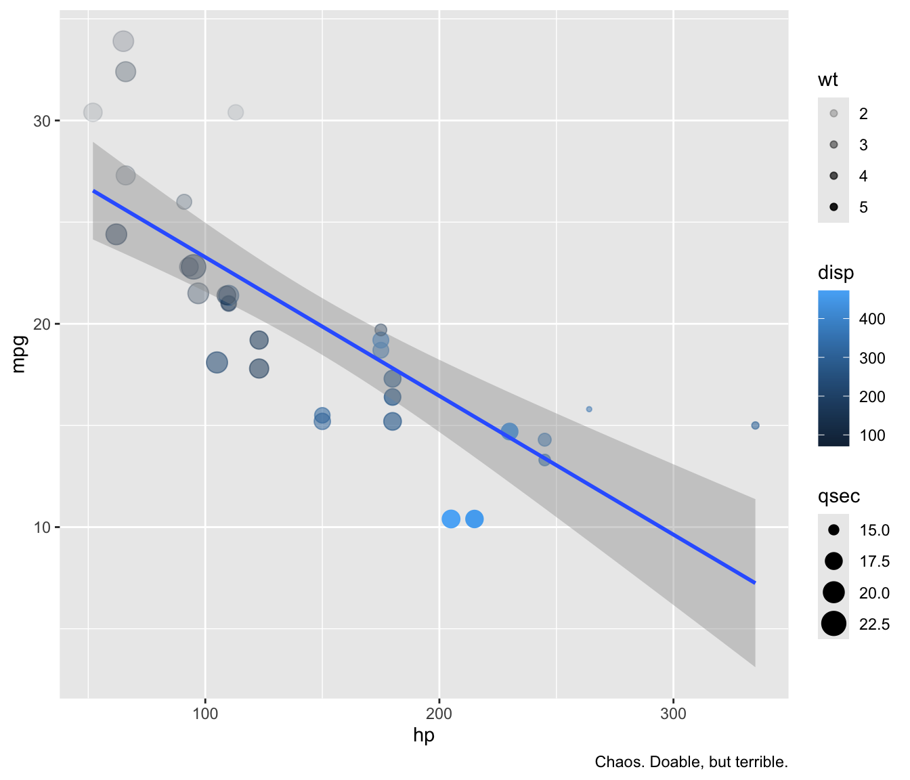
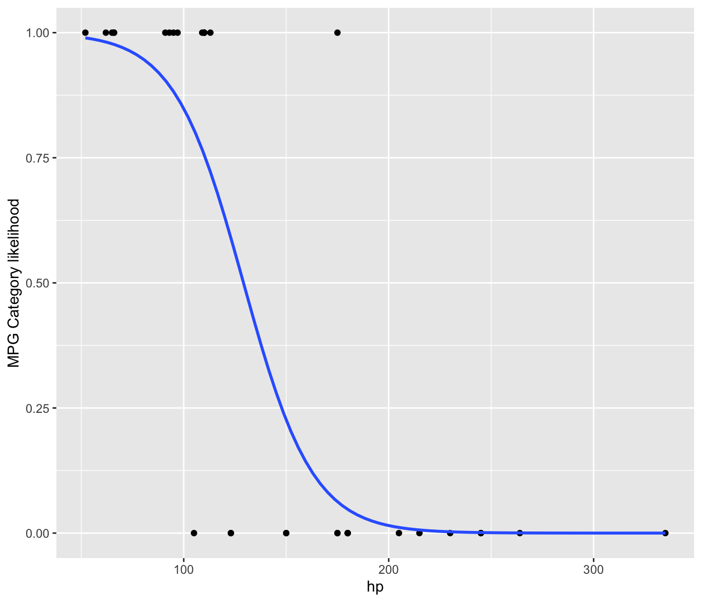
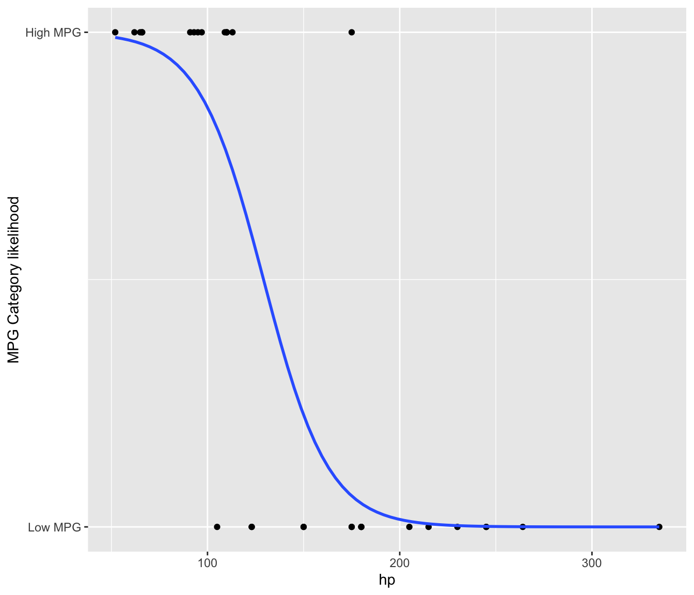

# Use built-in dataset 'starwars' for analysis
sw.desc <- starwars %>%
select(height, mass) %>%
drop_na() # or include the `na.rm=T` argument in your measures functions
# Create a long version to use for dplyr and ggplot stuff later
sw.desc.long <- sw.desc %>%
pivot_longer(c(height, mass), names_to = "measure") Demo: Hypothesis Testing
Hypothesis testing is anything you might usually think of as “results.” Essentially: do these data suggest some kind of non-random pattern? The best hypothesis test to use will depend on a few factors, most significantly the data type of the independent (predictor) and dependent (outcome) variables.
This flowchart is a quick-and-dirty, imperfect cheatsheet:

Here, in Part 2 of the statistics demo, we’ll continue using the starwars dataset to review some of the most common hypothesis tests used in psychology and other social sciences. Specifically, we’ll cover \(t\)-tests, ANOVA, chi-square, and linear and logistic regression.
It’s worth noting up top that for common stats like these, there are many ways to do the same thing in R. I’ll show you the way I think is most straightforward, but you may find other packages or functions that you prefer.
Categorical Predictors
Student’s t-tests
Student’s1 \(t\)-test is the bread and butter of hypothesis testing. It’s used to determine whether there is a significant difference between the means of two groups. They are commonly used to compare the means of a continuous dependent variable across two levels of a categorical independent variable.
1-sample
A 1-sample \(t\)-test tells you the likelihood that the “true” mean of a value is not equal to 0 (or another reasonable, specific alternative).
Applied example: A psychologist wants to test whether rates of depression are greater in gradute students than in the general population.
For example, a 1-sample \(t\)-test on the mass variable should return significant results, rejecting the null hypothesis that the true mean is 0. Since mass is necessarily a positive value, it is impossible that the true mean would be 0.
# Perform a 1-sample t-test on the mass variable
t.test(sw.desc$mass)
One Sample t-test
data: sw.desc$mass
t = 4.4109, df = 58, p-value = 4.525e-05
alternative hypothesis: true mean is not equal to 0
95 percent confidence interval:
53.15109 141.47264
sample estimates:
mean of x
97.31186 With a \(t\)-value of 4.411 and a \(p\)-value of 0, we can pretty confidently reject the null hypothesis that the true mean mass of all the physical beings in the Star Wars universe is 0.
We can alternatively specify the mean that the null hypothesis should assume. Let’s assume that the starwars dataset contains the mass of literally every character in Star Wars. In that case, the true population mean mass for Star Wars characters is 97.312 kg. We can specify the null/true mean with the mu (\(/mu\)) argument.
Is the mean of this sample different than the true mean?
# Perform a 1-sample t-test on the mass variable with a specified mean
# Here the specified mean is simply the mean of the sample
# (which is the whole population)
t.test(sw.desc$mass, mu=mean(sw.desc$mass))
One Sample t-test
data: sw.desc$mass
t = 0, df = 58, p-value = 1
alternative hypothesis: true mean is not equal to 97.31186
95 percent confidence interval:
53.15109 141.47264
sample estimates:
mean of x
97.31186 Obviously not, since the “sample” is what the true mean was calculated on. The \(t\)-value is 0 and the \(p\)-value is 1. It is literally not possible for the sample mean to be more like the true mean, because the sample mean is the true mean.
That’s not useful, but if we consider the full dataset the true, full population, we can compare a sample to that population.
# Perform a 1-sample t-test on the mass variable with a specified mean
# slice_sample randomly selects n rows from the df
slice_sample(sw.desc, n=15) %>%
t.test(sw.desc$mass,mu=mean(sw.desc$mass))
Welch Two Sample t-test
data: . and sw.desc$mass
t = -3.2264, df = 81.373, p-value = 0.001807
alternative hypothesis: true difference in means is not equal to 97.31186
95 percent confidence interval:
-32.10151 66.62445
sample estimates:
mean of x mean of y
114.57333 97.31186 In nearly all cases (depending on your random seed) this will result in rejecting the null hypothesis. Essentially this is showing that there are some values of mass (namely that of one Mr. The-Hutt, with a mass of 1358 kg) that is such an outlier it makes the mean of the full sample not actually representative of the “average”. (This is a case where median might be a better measure measure of center than mean, and a great example of why it’s important to always look at descriptive statistics before inferential stats.) If we get rid of the extreme outlier and use that as the “true” mean, things might look different.
# Create a new dataset without Jabba the Hutt (anything with mass more
# than 500% of the median)
sw.desc.nojabba <- sw.desc %>%
filter(!(mass > 5*median(mass))) Now randomly sampling from the dataframe will usually not be significantly different from that mean. Sometimes it will be though, just because of random variation. Sometimes is will be extremely significantly different. Why?
# notice that only the mu argument uses the dataset without jabba
slice_sample(sw.desc, n=25) %>%
t.test(sw.desc$mass, mu=mean(sw.desc.nojabba$mass))
Welch Two Sample t-test
data: . and sw.desc$mass
t = -0.89444, df = 100.33, p-value = 0.3732
alternative hypothesis: true difference in means is not equal to 75.57586
95 percent confidence interval:
-23.1651 112.9494
sample estimates:
mean of x mean of y
142.20400 97.31186 2-sample
For 2-sample \(t\)-tests, we need to include grouping variables.
# similar df as before but now with some possible grouping vars
sw.desc2 <- starwars %>%
select(sex, gender, species, homeworld, height, mass)While a 1-sample \(t\)-test compares a sample mean against a static value (like 0), a 2-sample \(t\)-test compares two sample means against each other. The null hypothesis of a 2-sample \(t\)-test is that the true means of the group are not different.
Applied example: A psychologist wants to test whether rates of graduate students’ depression are different in red and blue states2.
Is the mass of male3 characters different from female characters?
# Perform a 2-sample t-test on the mass variable
# comparing male & female groups
## overall, sig.
ttest2_overall <- t.test(
filter(sw.desc2, sex == "male")$mass,
filter(sw.desc2, sex == "female")$mass
)
ttest2_overall
Welch Two Sample t-test
data: filter(sw.desc2, sex == "male")$mass and filter(sw.desc2, sex == "female")$mass
t = 4.8612, df = 43.298, p-value = 1.571e-05
alternative hypothesis: true difference in means is not equal to 0
95 percent confidence interval:
14.94106 36.11926
sample estimates:
mean of x mean of y
80.21905 54.68889 For all characters, yes. We can reject the null hypothesis that the means are the same (\(t\) = 4.861, \(p\) < .001).
What if we just look at the humans?
# Perform a 2-tailed 2-sample t-test on the mass variable, comparing male and female humans only
ttest2_humans <- t.test(
filter(sw.desc2, sex == "male", species == "Human")$mass,
filter(sw.desc2, sex == "female", species == "Human")$mass
)
ttest2_humans
Welch Two Sample t-test
data: filter(sw.desc2, sex == "male", species == "Human")$mass and filter(sw.desc2, sex == "female", species == "Human")$mass
t = 2.8744, df = 2.7808, p-value = 0.06986
alternative hypothesis: true difference in means is not equal to 0
95 percent confidence interval:
-4.648771 63.417398
sample estimates:
mean of x mean of y
85.71765 56.33333 # Because all humans in the dataset are recorded as 1 of exactly 2 options
# (male or female)
# we can use a formula syntax instead of specifying the vectors directly
# This only works if the factor variable has exactly 2 levels!
# First we create a new dataframe with only humans, to ensure only 2 levels
humans_only <- filter(sw.desc2, species == "Human")
# Then use the syntax `dependent_variable ~ independent_variable`
# to specify the formula
ttest2_humans_alt <- t.test(
humans_only$mass ~ humans_only$sex
)For humans, no. We cannot reject the null hypothesis that the means are the same (\(t\) = 2.874, \(p\) = 0.07).
2-sample; 1-tailed
Often we have a theoretical reason to expect a difference in one direction, especially if we are building on previous research. This is where you can use a 1-tailed \(t\)-test.
Applied example: A psychologist wants to test whether the rate of graduate students’ depression is higher in red states than blue states. She is interested in explaining why academics are leaving institutions in red states and believes depression may be a factor. While it is possible that depression rates are lower in red states, she has no theoretical basis for expecting academics to leave red states because they were happier there.4
Outside the Star Wars Cinematic Universe, we know that the mean mass of male humans is higher than that of female humans. Rather than looking for any difference in means, we have a theoretical reason to look for a difference in one particular direction. If we set alternative = "greater", the null hypothesis is that the true difference in means (mean-of-males - mean-of-females) is less than or equal to 0.
# Perform a 1-tailed 2-sample t-test on the mass variable, comparing male and female humans
# with the null hypothesis that the *difference* in means is
# less than or equal to 0
ttest2_humans_1tail <- t.test(
# the order of the groups is important here!
filter(sw.desc2, sex == "male", species == "Human")$mass,
filter(sw.desc2, sex == "female", species == "Human")$mass,
alternative = "greater"
)
ttest2_humans_1tail
Welch Two Sample t-test
data: filter(sw.desc2, sex == "male", species == "Human")$mass and filter(sw.desc2, sex == "female", species == "Human")$mass
t = 2.8744, df = 2.7808, p-value = 0.03493
alternative hypothesis: true difference in means is greater than 0
95 percent confidence interval:
4.533443 Inf
sample estimates:
mean of x mean of y
85.71765 56.33333 Now we do see a significant effect. We can reject the null hypothesis that the mean mass of females is greater than or equal to that of males are the same (\(t\) = 2.874, \(p\) < 0.035).
Notice the importance of ordering in the t.test() function. In this 2-tailed 2-sample \(t\)-test, we want to know test whether it’s possible (the null – the thing we don’t expect) that the mean mass of females (group 2) is greater than or equal to the mean mass of males, so we put the group we do expect to be greater first. Try switching the order of the groups in each of the t.test() functions above and see how the results change.
You can use formula syntax for 1-tailed tests as well (as long as there are exactly two levels in the factor variable), but you need to be extra careful about the order of the levels. In this case, the unordered sex variable will put levels in alphabetical order: group 1 will be female and group 2 will be male – the opposite of the previous model.
Now we think that group 2 (males) will have greater mass than group 1 (females). The alternative hypothesis is that the mean mass of group 2 will be less than or equal to the mean mass of group 1. We can use the alternative = "less" argument to specify this.
ttest2_humans_1tail_alt <- t.test(
humans_only$mass ~ humans_only$sex,
# The alt/null hyp. is that group 2 is *less* than group 1
alternative = "less"
)
ttest2_humans_1tail_alt
Welch Two Sample t-test
data: humans_only$mass by humans_only$sex
t = -2.8744, df = 2.7808, p-value = 0.03493
alternative hypothesis: true difference in means between group female and group male is less than 0
95 percent confidence interval:
-Inf -4.533443
sample estimates:
mean in group female mean in group male
56.33333 85.71765 Compare the two outputs:
- The \(t\)-values are of the same absolute magnitude, but opposite sign (2.874 vs. -2.874). The \(t\)-value is calculated based on the difference between the means of the two groups, and the direction of that difference matters.
- The \(p\)-value is the same in both tests, \(p\)
apa_p(ttest2_humans_1tail$p.value, add_equals=T). The \(p\)-value is calculated based on the absolute value of the \(t\)-value, so the direction of the difference doesn’t matter. - The alternative hypothesis is different in two ways:
- Direction of difference
- Specificity: formula syntax uses the level names of the factor variable, while the vector syntax simply refers to “the difference in means” without specifying which group is which or the order of inclusion.
- The sample estimates are different in the same two ways:
- Order of the groups
- Specificity: formula syntax uses level names; vector syntax simply uses
xandy
What are the advantages of each?
Analysis choice
Take a second here to compare the motivations and results of these two tests. The first test told us that, statistically, there’s no difference between the means of males and females in the SWU. The second test said the opposite: that the mean mass of males is statistically significantly greater than the mean mass of females.
As a scientist, which results are we going to stand behind? The difference in totally fictional mass between male and female humans in the Star Wars Universe is a pretty low stakes interpretation, but the same logic applies to actual real science that matters.
2-tailed tests are generally recommended as the standard choice. They are more conservative (less likely to support a result that doesn’t really exist) and allow for the possibility of a difference in either direction.
1-tailed tests should only be used when 1) you have a specific directional hypothesis and 2) you are completely uninterested in effects in the opposite direction. If you’re not sure, stick with two-tailed tests.
That said, don’t avoid one-tailed tests in the name of “conservatism.” It’s not p-hacking to use a one-tailed test when you have a good reason to do so, it’s just using statistics effectively to answer the specific question you have.
Optional arguments
Important optional arguments for \(t\)-tests:
- True mean (\(\mu\)):
mu- In a 1-sample test, the null hypothesis will compare the mean to 0 by default. You can change this to the “true mean”.
- Alt hypothesis:
alternative = c("two.sided", "less", "greater")- By default this tests that the 1-var mean is not equal to 0 (or \(\mu\)) or that the 2-vars means are not equal to each other. If you are specifically looking to demonstrate that the mean is greater than or less than 0 (or \(\mu\)) or that one particular group’s mean is greater than the others (e.g., you expect the control group to have poorer outcomes than the treatment/intervention group), set this to
lessorgreater.
- By default this tests that the 1-var mean is not equal to 0 (or \(\mu\)) or that the 2-vars means are not equal to each other. If you are specifically looking to demonstrate that the mean is greater than or less than 0 (or \(\mu\)) or that one particular group’s mean is greater than the others (e.g., you expect the control group to have poorer outcomes than the treatment/intervention group), set this to
- Paired:
paired = FALSE- If the observations are related in some way, you can use a paired \(t\)-test. For example if you want to compare growth between pre-test and post-test, you’re more interested in the change for each individual rather than either mean test score per se.
- Confidence level:
conf.level = 0.95- Set an alternative confidence interval when comparing means. This is rarely changed; 95% is almost always the expectation here.
ANOVA
Think of an Analysis of Variance (ANOVA) as an extension of the \(t\)-test. With a \(t\)-test you can compare the mean of 1 group to a static value or the means of 2 groups to each other. The basic functionality of ANOVA is to allow you compare three or more groups.
ANOVA is a whole family of analyses, but we’ll focus on just 1-way ANOVA and 2-way ANOVA. One-way ANOVA is appropriate when there is one categorical independent variable with multiple levels, while two-way ANOVA is used when there are two categorical independent variables and their interaction effect needs to be examined.
Start by messing with the SW dataset to get it into a form that’s useful for ANOVA.
sw.hyp <- starwars %>%
select(name, height, mass, hair_color, skin_color, eye_color, sex, gender, homeworld, species) %>%
mutate(hair_color = str_remove(hair_color, "[,].*$"),
eye_color = str_remove(eye_color, "[,].*$"),
skin_color = str_remove(skin_color, "[,].*$")) %>%
mutate(sex3cat = case_when(sex %in% c("male", "female") ~ sex,
TRUE ~ "other"),
hair4cat = case_when(hair_color %in% c("white", "grey") ~ "light",
hair_color %in% c("blond", "blonde") ~ "blond",
hair_color == "none" ~ "none",
TRUE ~ "dark"),
skin6cat = case_when(skin_color %in%
c("brown", "brown mottle", "dark", "tan")
~ "tan/dark",
skin_color %in%
c("blue", "green", "green-tan", "mottled green")
~ "cool hue",
skin_color %in%
c("silver", "gold", "metal")
~ "metallic",
skin_color %in%
c("fair", "light", "white")
~ "fair/light",
skin_color %in%
c("yellow", "red", "orange")
~ "warm hue",
TRUE ~ "other"
),
species3cat = ifelse(species %in% c("Human", "Droid"),
species, "Other")
) %>%
# let's also drop jabba
filter(name != "Jabba Desilijic Tiure")1-Way ANOVA
Applied Example: A psychologist wants to compare the effectiveness of three different stress reduction techniques (e.g., mindfulness meditation, progressive muscle relaxation, and deep breathing exercises) on reducing anxiety levels among participants.
One-way ANOVA can be used to test for significant differences in anxiety levels (dependent variable, continuous) across the three stress reduction techniques (independent variable, factor).
If the \(p\)-value from the ANOVA test is significant, post-hoc tests (e.g., Tukey’s HSD) can be conducted to determine which techniques differ significantly from each other.
# Perform a 1-way ANOVA comparing the dependent variable (height) across
# levels of the independent factor variable (sex3cat)
anova_sex3 <- aov(height ~ sex3cat, data=sw.hyp)
summary(anova_sex3) Df Sum Sq Mean Sq F value Pr(>F)
sex3cat 2 6450 3225 2.75 0.0702 .
Residuals 77 90290 1173
---
Signif. codes: 0 '***' 0.001 '**' 0.01 '*' 0.05 '.' 0.1 ' ' 1
6 observations deleted due to missingnessTukeyHSD(anova_sex3) Tukey multiple comparisons of means
95% family-wise confidence level
Fit: aov(formula = height ~ sex3cat, data = sw.hyp)
$sex3cat
diff lwr upr p adj
male-female 7.551378 -16.85897 31.9617284 0.7409512
other-female -20.904762 -55.86907 14.0595448 0.3312404
other-male -28.456140 -57.80962 0.8973373 0.0594073Here there is a trending but non-significant difference in height across the 3 sex categories \(F\)() = 2.75, \(p\) = 0.07.
Using Tukey post-hoc adjustment we can see this difference is primarily driven by the difference in height between those in the “male” and “other” category.
2-Way ANOVA
Applied Example: A psychologist conducts a study to investigate the effects of both sex (male vs. female) and stress level (low vs. high) on performance in a cognitive task.
In this scenario, there are two independent variables: sex (with two levels: male and female) and stress level (with two levels: low and high). The dependent variable is performance in the cognitive task. Two-way ANOVA would be used to assess the main effects of gender and stress level, as well as their interaction effect on performance. The interaction effect indicates whether the effect of one independent variable depends on the level of the other independent variable.
In the Star Wars dataset, we can use a 2-way ANOVA to look for associations between any of the factor variables we’ve already defined (or that existed in the original dataset). For example, is there a relationship between categories of sex and hair color in predicting a character’s height?
# Perform a 2-way ANOVA comparing the dependent variable (height)
# across sex and hair color
anova_sex3_hair4 <- aov(height ~ sex3cat + hair4cat, data=sw.hyp)
summary(anova_sex3_hair4) Df Sum Sq Mean Sq F value Pr(>F)
sex3cat 2 6450 3225 2.730 0.0718 .
hair4cat 3 2879 960 0.812 0.4910
Residuals 74 87411 1181
---
Signif. codes: 0 '***' 0.001 '**' 0.01 '*' 0.05 '.' 0.1 ' ' 1
6 observations deleted due to missingnessTukeyHSD(anova_sex3_hair4) Tukey multiple comparisons of means
95% family-wise confidence level
Fit: aov(formula = height ~ sex3cat + hair4cat, data = sw.hyp)
$sex3cat
diff lwr upr p adj
male-female 7.551378 -16.96819 32.070950 0.7426034
other-female -20.904762 -56.02551 14.215990 0.3340873
other-male -28.456140 -57.94096 1.028677 0.0608330
$hair4cat
diff lwr upr p adj
dark-blond 0.6163802 -47.06224 48.29500 0.9999858
light-blond -16.0775689 -76.67604 44.52090 0.8977858
none-blond 7.7114314 -39.89923 55.32209 0.9739036
light-dark -16.6939492 -59.88228 26.49438 0.7406382
none-dark 7.0950511 -14.34863 28.53873 0.8204713
none-light 23.7890003 -19.32428 66.90228 0.4725622Shockingly, there is no significant difference. Who could have guessed that the powerful combo of hair color and sex together would not predict height?
As another example, let’s look and sex and gender together. It’s a weird combo, but you could come up with a theoretical reason to ask about an interaction here.
# Perform a 2-way ANOVA comparing the dependent variable (height) across
# sex and gender
anova_sex3_gender <- aov(height ~ sex3cat + gender, data=sw.hyp)
summary(anova_sex3_gender) Df Sum Sq Mean Sq F value Pr(>F)
sex3cat 2 10712 5356 4.590 0.0133 *
gender 1 1549 1549 1.327 0.2531
Residuals 72 84020 1167
---
Signif. codes: 0 '***' 0.001 '**' 0.01 '*' 0.05 '.' 0.1 ' ' 1
10 observations deleted due to missingnessTukeyHSD(anova_sex3_gender) Tukey multiple comparisons of means
95% family-wise confidence level
Fit: aov(formula = height ~ sex3cat + gender, data = sw.hyp)
$sex3cat
diff lwr upr p adj
male-female 7.551378 -16.83329 31.936048 0.7399418
other-female -40.371429 -82.96234 2.219483 0.0668560
other-male -47.922807 -86.05244 -9.793179 0.0100171
$gender
diff lwr upr p adj
masculine-feminine 2.923716 -16.70214 22.54957 0.7673432In this case, there is one significant main effect (sex category) and no significant interaction effects.
Aside from being used as a hypothesis test itself, another important use for ANOVA is comparing model fit. For example, you create 3 possible regressions to test whether household income and/or proximity to grocery stores affects stress level using one variable, both variables, or both and an interaction effect. Passing these models to the anova() function can tell you which model best explains a predictive effect, so you can move forward just using that model.
We can use the mtcars dataset to show a simple example: Does horsepower and/or weight predict a car’s fuel consumption?
# Use the mtcars dataset
# Model 1: Predicting mpg (miles per gallon) using horsepower
model_hp <- lm(mpg ~ hp, data = mtcars)
summary(model_hp)
Call:
lm(formula = mpg ~ hp, data = mtcars)
Residuals:
Min 1Q Median 3Q Max
-5.7121 -2.1122 -0.8854 1.5819 8.2360
Coefficients:
Estimate Std. Error t value Pr(>|t|)
(Intercept) 30.09886 1.63392 18.421 < 2e-16 ***
hp -0.06823 0.01012 -6.742 1.79e-07 ***
---
Signif. codes: 0 '***' 0.001 '**' 0.01 '*' 0.05 '.' 0.1 ' ' 1
Residual standard error: 3.863 on 30 degrees of freedom
Multiple R-squared: 0.6024, Adjusted R-squared: 0.5892
F-statistic: 45.46 on 1 and 30 DF, p-value: 1.788e-07# Model 2: Predicting mpg using horsepower and weight
model_hpwt <- lm(mpg ~ hp + wt, data = mtcars)
summary(model_hpwt)
Call:
lm(formula = mpg ~ hp + wt, data = mtcars)
Residuals:
Min 1Q Median 3Q Max
-3.941 -1.600 -0.182 1.050 5.854
Coefficients:
Estimate Std. Error t value Pr(>|t|)
(Intercept) 37.22727 1.59879 23.285 < 2e-16 ***
hp -0.03177 0.00903 -3.519 0.00145 **
wt -3.87783 0.63273 -6.129 1.12e-06 ***
---
Signif. codes: 0 '***' 0.001 '**' 0.01 '*' 0.05 '.' 0.1 ' ' 1
Residual standard error: 2.593 on 29 degrees of freedom
Multiple R-squared: 0.8268, Adjusted R-squared: 0.8148
F-statistic: 69.21 on 2 and 29 DF, p-value: 9.109e-12# Model 3: Predicting mpg using horsepower, weight, with an interaction effect
model_int <- lm(mpg ~ hp*wt, data = mtcars)
summary(model_int)
Call:
lm(formula = mpg ~ hp * wt, data = mtcars)
Residuals:
Min 1Q Median 3Q Max
-3.0632 -1.6491 -0.7362 1.4211 4.5513
Coefficients:
Estimate Std. Error t value Pr(>|t|)
(Intercept) 49.80842 3.60516 13.816 5.01e-14 ***
hp -0.12010 0.02470 -4.863 4.04e-05 ***
wt -8.21662 1.26971 -6.471 5.20e-07 ***
hp:wt 0.02785 0.00742 3.753 0.000811 ***
---
Signif. codes: 0 '***' 0.001 '**' 0.01 '*' 0.05 '.' 0.1 ' ' 1
Residual standard error: 2.153 on 28 degrees of freedom
Multiple R-squared: 0.8848, Adjusted R-squared: 0.8724
F-statistic: 71.66 on 3 and 28 DF, p-value: 2.981e-13All three models show a significant effect of the predictor variable(s). The question becomes which of these to use for the rest of the analyses and in the interpretation of our results. Comparing these models in an ANOVA tells us which model (if any) has a significantly better predictive fit.
# Compare model fit using ANOVA; anova() function is in the stats package
anova_result <- anova(model_hp, model_hpwt, model_int)
# View the ANOVA table
anova_resultAnalysis of Variance Table
Model 1: mpg ~ hp
Model 2: mpg ~ hp + wt
Model 3: mpg ~ hp * wt
Res.Df RSS Df Sum of Sq F Pr(>F)
1 30 447.67
2 29 195.05 1 252.627 54.512 4.856e-08 ***
3 28 129.76 1 65.286 14.088 0.0008108 ***
---
Signif. codes: 0 '***' 0.001 '**' 0.01 '*' 0.05 '.' 0.1 ' ' 1The \(p\)-values here indicate whether there is a significant difference in fit between one model and the model that came before it. Assuming significant difference, the best model fit is the one with the lowest residual sum of squares (RSS).
Note that depending on the type of models you’re comparing, you might need to find the lowest value of something else. For example with mixed-effects models you’ll (typically) look for the lowest BIC.
The order of the models in the anova() function matters. The output compares each model’s fit to the one above it. This ANOVA tells us that Model 2 (with both hp and wt) is a better fit than Model 1 (hp only), and that Model 3 (with an interaction effect) is a better fit than Model 2. It’s not directly comparing Model 1 and Model 3, but we can infer that Model 3 is the best fit overall because of how they are ordered.
How should you order them? Typically, you start with the simplest model and go in order of complexity. When “complexity” is hard to compare, you can use theoretical motivation to order them. For example, if two models are the same except they test different interaction effects, ask which interaction effect you think it most likely to actually exist (or be stronger). The more likely you think it is, the later you should test it so you can detect improvement model to model.
Chi-square
The Chi-Square Test is used to determine whether there is a significant association between categorical variables. It tests for “independence” (the null hypothesis), where there is no association. You can think of it like a kind of “correlation” between categorical data.
Applied Example: A psychologist conducting research on the effectiveness of different therapy interventions for treating phobias wants to examine whether there is a significant association between the type of therapy (exposure therapy, cognitive-behavioral therapy, or relaxation therapy) and the self-reported effectiveness (reduction of symptoms, increase in symptoms, or no change).
In this scenario, there are two categorical variables (therapy type & symptom change). The experimental design allows for a directional association: sensibly, therapy type is the predictor variable and symptom change is the outcome variable. The null hypothesis of a Chi-sq. test is that there is no association between the two variables. That is, a subject in any of the three therapy groups is equally likely to fall into any of the three outcome groups.
Chi-sq. tests are useful outside of experimental designs as well:
Applied Example: A psychologist conducting research on pre-school readiness wants to know if there is an association between parent education level (no college, college, graduate) and child’s reading level (below average, average, above average).
In this scenario, the psychologist is not manipulating the parent’s education level, but there is still directionality. Since parents have already achieved their education level at the time of measuring child reading level, it would be impossible for the child’s reading level to affect the parent’s education level. Although we cannot say with certainty that a significant association between parent education level and child reading level is causal, we can design the study and models to infer high likelihood of causality (assuming there was in fact an association).
Like with correlation of continuous variables, directionality isn’t required. Amount of time spent outside and amount of time spent with family may be positively correlated, but it’s not clear which would cause the other (if either). There may be a significant association between favorite ice cream flavor and favorite candy flavor, but it’s not clear that one of those is the independent predictor and the other the dependent outcome.
In the Star Wars dataset, we can use chi-sq. to look for associations between any of the factor variables we’ve already defined (or that existed in the original dataset). For example, is there a relationship between sex and hair color?
A contingency table shows the frequency of observations in each possible combination of factor levels:
# Create a contingency table with frequencies of hair-color/sex combos
sex_hair_table <- table(sw.hyp$sex3cat, sw.hyp$hair4cat)
sex_hair_table
blond dark light none
female 1 9 1 5
male 3 24 4 29
other 0 6 0 4The chi-sq. test compares this contingency table to what we’d expect if the observations were evenly distributed based on the number of observations per level within each variable (i.e., not just dividing the total number of observations up evenly across all cells.
# Perform chi-square test on the contingency table
# The chisq.test() function is in the stats package
sex_hair_chi2 <- chisq.test(sex_hair_table)
# View the results
sex_hair_chi2
Pearson's Chi-squared test
data: sex_hair_table
X-squared = 3.3807, df = 6, p-value = 0.7598These results are not significant. We can’t reject the null hypothesis that there is any non-random relationship between sex and hair color. The two could be (shockingly) independent.
What about the relationship between hair color and skin color?
# Create a contingency table with frequencies of hair-color/skin-color
skin_hair_table <- table(sw.hyp$skin6cat, sw.hyp$hair4cat)
skin_hair_table
blond dark light none
cool hue 0 2 1 9
fair/light 4 24 2 4
metallic 0 1 0 2
other 0 1 2 14
tan/dark 0 9 0 5
warm hue 0 2 0 4# Perform chi-square test on the contingency table
# The chisq.test() function is in the stats package
skin_hair_chi2 <- chisq.test(skin_hair_table)
# View the results
skin_hair_chi2
Pearson's Chi-squared test
data: skin_hair_table
X-squared = 40.335, df = 15, p-value = 0.0004035In this case, \(\chi^2\) = 40.3353563 (\(p\) < .001). We can reject the null hypothesis and claim that there is an association between hair and skin color in characters in the Star Wars Universe. We cannot make any claims about direction of the association.
Continuous Predictors
Linear Regression
Linear regression models the relationship between a continuous dependent variable and one or more (i.e., multiple regression) independent variables, at least one of which is also continuous. Linear modeling can also incorporate interaction effects between predictors.
Applied Example: A psychologist is interested in understanding the relationship between hours of study per week and exam scores among college students. Using a linear regression to model the this relationship shows 1) whether there is a relationship, 2) whether that association is statistically significant, 3) the association’s direction, and 4) the magnitude of the association.
Since both variables in this case are continuous, the psychologist could have used a correlation instead of a regression. One advantage of the regression is that the magnitude of the effect has more immediate application. Correlation is always normed to be between 0 and 1, so the magnitude of the correlation coefficient can be interpreted as a kind of percentage change.
With regression, the slope (magnitude) is not normed and applies directly to the variables. It can be interpreted as change-in-outcome per change-in-predictor, i.e. the expected change (probably increase?) in exam score for every additional hour of studying. Without norming, the regression will also give an intercept, which tells you what the predicted value of \(y\) would be if \(x=0\) (i.e., the expected exam score for someone who did not study at all).
Another advantage of linear models is the opportunity to consider multiple predictor variables. Additional independent variables may be variables of interest (maybe both study hours and sleep hours affect exam scores) or one may be a control (maybe the effect of study hours differs based on students’ pre-test scores).
In the Star Wars dataset, we can use linear regression to model the relationship between mass and height, like we did with correlation (in the descriptive stats demo).
# recall the correlation of mass and height from above
mass_height_corr <- cor.test(sw.desc$mass, sw.desc$height)
mass_height_corr
Pearson's product-moment correlation
data: sw.desc$mass and sw.desc$height
t = 0.99653, df = 57, p-value = 0.3232
alternative hypothesis: true correlation is not equal to 0
95 percent confidence interval:
-0.1295651 0.3743950
sample estimates:
cor
0.130859 # model the effect of height on mass
# the formula here is in the syntax [outcome var] ~ [predictor var]
mass_height_lm <- lm(mass ~ height, data = sw.desc)
# the output of the model object itself doesn't have a lot of info
# so you'll want to look at the summary() of the model
summary_mass_height_lm <- summary(mass_height_lm)
summary_mass_height_lm
Call:
lm(formula = mass ~ height, data = sw.desc)
Residuals:
Min 1Q Median 3Q Max
-60.95 -29.51 -20.83 -17.65 1260.29
Coefficients:
Estimate Std. Error t value Pr(>|t|)
(Intercept) -11.4868 111.3842 -0.103 0.918
height 0.6240 0.6262 0.997 0.323
Residual standard error: 169.5 on 57 degrees of freedom
Multiple R-squared: 0.01712, Adjusted R-squared: -0.0001194
F-statistic: 0.9931 on 1 and 57 DF, p-value: 0.3232The correlation between height and mass shows that there is some positive association: as height increases, mass increases too (though remember from the correlation matrix that this effect was not significant).
The linear model shows that for every additional unit of height (cm), mass increases by 0.6240033 units (kg), but this effect is not significant.
One clear way to see that this very simple regression is doing basically the same thing as the correlation is comparing the \(p\)-values of the cor.test and of the height slope. You can find these in the output, or extract them from the objects:
- Correlation: \(p\) = 0.3232031
- Regression: \(p\) = 0.3232031
The lm also gives an intercept, which in this case is a fantastic example of when the intercept is simply not a useful thing to interpret: what should we expect the mass of a 0cm being to be? Apparently -11.4868157, which is nonsensical. First of all, mass cannot be negative, but that could potentially just be the result of a bad model fit. More clearly, a being cannot exist with literally 0 height. If a real observation’s predictor measurement can literally never be 0, the intercept does not have a meaningful interpretation. It’s still important for the model’s overall functionality and fit, but only the slope will go into our interpretation of the results.
Be careful: the intercept will have its own significance value! It’s almost always the significance of the slope that matters, so don’t get excited when you see *** on the intercept line of the model output.
As discussed above, visualizing simple regression is the same as visualizing correlation: scatter plot and linear smoothing (Figure 1).
ggplot(sw.hyp, aes(x=height, y=mass)) +
geom_point() +
geom_smooth(method="lm")
Multiple regression works exactly the same way. Add predictor or control variables to the right side of the formula. Connect them with an asterisk to look for an interaction effect.
Using the mtcars dataset, (how) do horsepower and displacement predict fuel efficiency (miles per gallon)?
# The formula syntax for regressions (and nearly all modelling in R) is:
# 1 outcome variable on the left of a tilde ~
# all individual predictor variables (including controls) separated by
# plus signs + to the right of the tilde ~
# after individual vars, any interaction effects are included by using
# an asterisk * between the vars
# [outcome var] ~ [predictor var 1] + [predictor var 2] + ... + [predictor var 1]*[predictor var 2]
cars_hp <- lm(data = mtcars, mpg ~ hp)
summary(cars_hp)
Call:
lm(formula = mpg ~ hp, data = mtcars)
Residuals:
Min 1Q Median 3Q Max
-5.7121 -2.1122 -0.8854 1.5819 8.2360
Coefficients:
Estimate Std. Error t value Pr(>|t|)
(Intercept) 30.09886 1.63392 18.421 < 2e-16 ***
hp -0.06823 0.01012 -6.742 1.79e-07 ***
---
Signif. codes: 0 '***' 0.001 '**' 0.01 '*' 0.05 '.' 0.1 ' ' 1
Residual standard error: 3.863 on 30 degrees of freedom
Multiple R-squared: 0.6024, Adjusted R-squared: 0.5892
F-statistic: 45.46 on 1 and 30 DF, p-value: 1.788e-07cars_hp_disp <- lm(data = mtcars, mpg ~ hp + disp)
summary(cars_hp_disp)
Call:
lm(formula = mpg ~ hp + disp, data = mtcars)
Residuals:
Min 1Q Median 3Q Max
-4.7945 -2.3036 -0.8246 1.8582 6.9363
Coefficients:
Estimate Std. Error t value Pr(>|t|)
(Intercept) 30.735904 1.331566 23.083 < 2e-16 ***
hp -0.024840 0.013385 -1.856 0.073679 .
disp -0.030346 0.007405 -4.098 0.000306 ***
---
Signif. codes: 0 '***' 0.001 '**' 0.01 '*' 0.05 '.' 0.1 ' ' 1
Residual standard error: 3.127 on 29 degrees of freedom
Multiple R-squared: 0.7482, Adjusted R-squared: 0.7309
F-statistic: 43.09 on 2 and 29 DF, p-value: 2.062e-09cars_inter <- lm(data = mtcars, mpg ~ hp + disp + hp*disp)
summary(cars_inter)
Call:
lm(formula = mpg ~ hp + disp + hp * disp, data = mtcars)
Residuals:
Min 1Q Median 3Q Max
-3.5153 -1.6315 -0.6346 0.9038 5.7030
Coefficients:
Estimate Std. Error t value Pr(>|t|)
(Intercept) 3.967e+01 2.914e+00 13.614 7.18e-14 ***
hp -9.789e-02 2.474e-02 -3.956 0.000473 ***
disp -7.337e-02 1.439e-02 -5.100 2.11e-05 ***
hp:disp 2.900e-04 8.694e-05 3.336 0.002407 **
---
Signif. codes: 0 '***' 0.001 '**' 0.01 '*' 0.05 '.' 0.1 ' ' 1
Residual standard error: 2.692 on 28 degrees of freedom
Multiple R-squared: 0.8198, Adjusted R-squared: 0.8005
F-statistic: 42.48 on 3 and 28 DF, p-value: 1.499e-10In Model 1, which includes just one independent variable (mpg ~ hp), horsepower is negatively associated with fuel efficiency (\(\beta\) = -0.068, \(p\) < .001). That is, for every additional unit of horsepower we expect a reduction of 0.068 mpg.
Model 2 includes a second (continuous) predictor variable: displacement. In this regression, displacement (\(\beta\) = -0.03, \(p\) < .001) is a better predictor of mpg than horsepower, which in fact is no longer even significant (\(\beta\) = -0.03, \(p\) < = .074).
Model 3 adds a potential interaction effect between horsepower and displacement. In this example, an interaction would mean that the strength of the effect on mpg of horsepower changes across changing levels of displacement. (As a simple psychology example, we might be interested in the interaction of age and sleep deprivation on exam scores. Sleep deprivation will probably lower exam scores for everyone, but it might lower them a lot for younger kids and just a little for older kids or vice versa). In this model, both horsepower and displacement have a significant effect on mpg, and there is a significant interaction effect (\(\beta\) = 0, \(p\) .002). The effect of displacement on mpg gets stronger as horsepower increases, above and beyond overall effects of displacement and horsepower.
If we have multiple reasonable models that give different results, which one should we use? We definitely don’t want to create a bunch of models and pick the one that gives us the results we like the best. Instead, remember that ANOVA can compare model fit to help us make an informed and (relatively) impartial choice.
# Compare model fit using ANOVA
cars.aov <- anova(cars_hp, cars_hp_disp, cars_inter)
tidy.cars.aov <- tidy(cars.aov)
cars.aovAnalysis of Variance Table
Model 1: mpg ~ hp
Model 2: mpg ~ hp + disp
Model 3: mpg ~ hp + disp + hp * disp
Res.Df RSS Df Sum of Sq F Pr(>F)
1 30 447.67
2 29 283.49 1 164.181 22.662 5.339e-05 ***
3 28 202.86 1 80.635 11.130 0.002407 **
---
Signif. codes: 0 '***' 0.001 '**' 0.01 '*' 0.05 '.' 0.1 ' ' 1We look for the model that has the lowest residual sum of squares (RSS) that is also significantly improved from the next best model. In this case, Model 2 is a significantly better fit than Model 1 (\(p\) < .001), and Model 3 is a significantly better fit than Model 2 (\(p\) = .002). Moving forward, it makes sense to use Model 3 that includes the interaction between the two independent variables of interest.
Remember that order matters! Try shuffling the models around and seeing how the output changes.
Visualizing multiple regression
Visualizing relationships between more than two continuous variables gets very complicated very quickly. Although there are ways to plot a regression onto three axes (e.g., the plot3D package), it’s not super easy to produce or interpret, and there’s to way to create plot with more than 3 dimensions.
If you only have one continuous independent variable (the others are categorical or logical), you can use grouping strategies. Figure 2 demonstrates this approach to show the effects of horsepower, transmission type (am), and engine type (vs) on fuel efficiency using color grouping and faceting.
# scatterplot and regression line of MPG, HP, engine type,
# and transmission type
mtcars %>%
mutate(factor.am = factor(am),
factor.vs = factor(vs)) %>%
ggplot(aes(x=hp, y=mpg, color=factor.am)) +
geom_point() +
geom_smooth(method="lm") +
facet_wrap(vars(factor.vs))

With multiple continuous predictors, you can use color, transparency, size, etc. to add another dimension without literally adding another dimension. Figure 3 again shows horsepower’s primary effect on MPG, while color adds in information about displacement.
mtcars %>%
ggplot(aes(x=hp, y=mpg)) +
geom_point(aes(color=disp)) +
geom_smooth(method="lm")

You can go crazy with even more continuous variables, but you probably shouldn’t (Figure 4).
mtcars %>%
ggplot(aes(x=hp, y=mpg)) +
geom_point(aes(color=disp, alpha = wt, size = qsec)) +
geom_smooth(method="lm") +
labs(caption = "Chaos. Doable, but terrible.")

Logistic Regression
Logistic regression is a type of generalized linear modeling (GLM) used when the dependent variable is binary (two categories). It models the probability of the occurrence of an event based on one or more independent variables. You can interpret a logistic regression as the change in probability that an outcome will occur given changes in your predictors.
Applied Example: A psychologist is interested in identifying risk factors associated with the presence of anxiety disorders among college students, such as stress levels, sleep quality, and academic performance.
In this scenario, the outcome is not how much anxiety students experience (however you’d quantify that as a continuous variable), but simply the binary option of has-an-anxiety-disorder or doesn’t-have-an-anxiety-disorder.
Note that this is a good example of where the direction between variables is not certain. In this model, we are treating the presence of an anxiety disorder as the outcome, which implies that the independent variables of stress, sleep, and academic performance are what lead to that diagnosis. While that may be what’s happening, it’s also reasonable to suspect that having an anxiety disorder is actually what leads to stress, sleep disturbance, and changes in academic performance. The logistic regression is still useful even if the cause-and-effect relationship is murky at best, so long as we are cautious and transparent when interpreting the results.
It is typical, but is not strictly necessary, that at least one predictor is continuous. If all predictors are categorical, it may be better to use something like a Chi-square test.
The glm() function in the stats package allows us to run logistic regressions (and other GLMs) with a syntax very similar to linear regression by specifying a distribution “family.” For logistic regression, the “family” is “binomial.” Here, rather than asking how much a change in horsepower will change MPG, we ask whether a change in horsepower changes the probability of a car being in the “High efficiency” category (defined as MPG above the median).
# Convert MPG to a binary variable
mt2 <- mtcars %>%
mutate(highMPG = ifelse(mpg > median(mtcars$mpg), 1, 0))
# Fit logistic regression model
# The key here is the `family=binomial` argument!!
log_cars <- glm(highMPG ~ hp, data = mt2, family = binomial)
# Summary of the model
summary(log_cars)
Call:
glm(formula = highMPG ~ hp, family = binomial, data = mt2)
Coefficients:
Estimate Std. Error z value Pr(>|z|)
(Intercept) 7.62119 2.64469 2.882 0.00396 **
hp -0.05901 0.02114 -2.791 0.00525 **
---
Signif. codes: 0 '***' 0.001 '**' 0.01 '*' 0.05 '.' 0.1 ' ' 1
(Dispersion parameter for binomial family taken to be 1)
Null deviance: 44.236 on 31 degrees of freedom
Residual deviance: 18.022 on 30 degrees of freedom
AIC: 22.022
Number of Fisher Scoring iterations: 7Unsurprisingly (given what we saw with the linear models), higher horsepower makes it less likely that a car falls in the high efficiency category.
You can visualize logistic regression with point and smooth geoms just like “regular” (Gaussian) regressions. Specify the glm method and set the family to binomial with the syntax used here to produce Figure 5).
ggplot(mt2, aes(x = hp, y = highMPG)) +
geom_point() +
geom_smooth(method = "glm", method.args = list(family = "binomial"),
se = FALSE) +
labs(y = "MPG Category likelihood")

Notice that the y-axis goes from 0 to 1 (0% likely to be high-MPG to 100% likely to be high-MPG), and that all values fall either on \(y=0\) or \(y=1\).
Alternatively, you could modify the y-axis labels to more clearly communicate what the two categories are (Figure 6). Neither is necessarily better, but the second might be more intuitive to someone who doesn’t know what a logistic regression is, or if the 2 levels in the category don’t have an inherent order.
ggplot(mt2, aes(x = hp, y = highMPG)) +
geom_point() +
geom_smooth(method = "glm", method.args = list(family = "binomial"),
se = FALSE) +
scale_y_continuous(breaks = c(0,1), labels = c("Low MPG", "High MPG")) +
labs(y = "MPG Category likelihood")

More
- Poisson GLM (GLM with
family=poisson)- used for count/frequency data
- e.g., a psychologist wants to determine whether each of 3 intervention options decreases the number of times symptomatic behaviors are used in an observation period
- Generalized Linear Mixed-Effects Models (GLMM)
- used for nested or hierarchical data, where you need to account for random or spillover effects
- e.g., a psychologist want to determine the effectiveness of a teaching intervention. the intervention is administered at classroom level, but measured at the student level. the psychologist includes School ID as a random effect because they expect students will perform similarly to other students in their own school based on many factors unrelated to the intervention
Footnotes
Fun fact: William Sealy Gosset, a chemist at the Guinness brewery, published under the pseudonym “Student” because (allegedly) Guinness didn’t want their competitors to know they were using statistics to improve their product.↩︎
For my international friends who have the luxury of not thinking about this all the time, “red states” and “blue states” are American shorthand for states that tend to vote Republican and Democratic, respectively.↩︎
We’re using the
sexvariable (male/female/other) here because we’re going to be comparing physical/biological characteristics. The starwars dataset also includes agendervariable you can use for more social/identity comparisons (again, within an entirely fictional universe primarily made up of aliens who almost certainly don’t share our conceptualizations of either sex or gender).↩︎Though Reviewer 2 might note that all graduate students are necessarily masochists, and therefore would indeed travel to blue states for the pain of it.↩︎